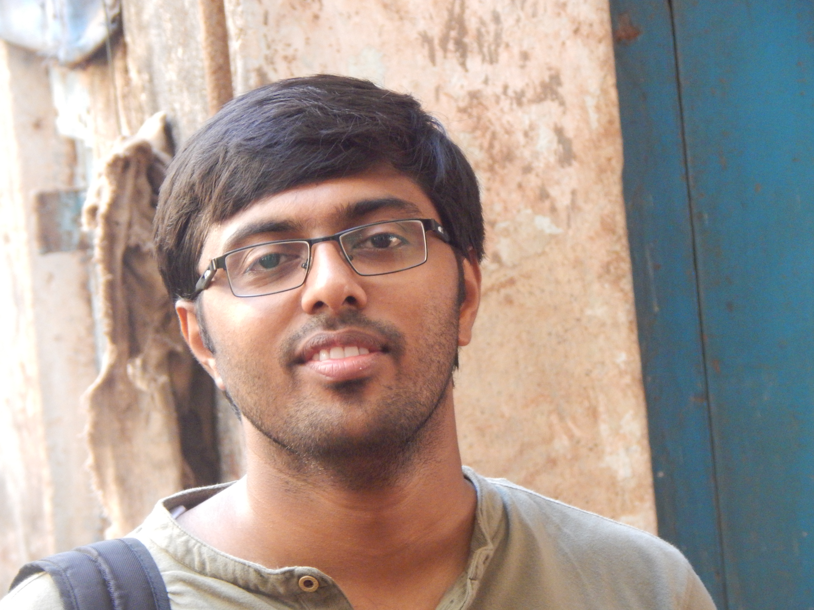

|  |
Aniruddh Rao KabbinaleLead Research EngineerSiemens India Bengaluru, Karnataka India Email: aniruddhrao.kabbinale[AT]siemens.com, ark54[AT]cam.ac.uk, aniruddh.kabbinale[AT]gmail.com, anirudh.kabi[AT]ee.iitb.ac.in Mobile: +918454992356 |
| Home | | | Research, Work Experience and other academic projects | | | More about me |
Work ExperienceWorking as Lead Research Engineer Siemens India , Bengaluru.
Worked as Researcher at Computer Laboratory, University of Cambridge , Cambridge UK.
|
Academic ProjectsM. Tech Thesis Software defined networking(SDN) based controller for Wireless LAN
M. Tech Project, Guide: Prof. Abhay Karandikar (June 2015 - June 2016)
o Worked as an equal member of a five person team to implement a WLAN Controller that uses CAPWAP tunnel to communicate with APs(access points) running Openwrt. Course Projects at IIT Bombay
o Study of 3GPP LTE handover procedure and effect of various handover parameters. o Survey of various ICIC techniques and study of a mobility based enhanced ICIC technique. [Report]
o Implemented a 2x2 MIMO, adaptive modulation technique (abstraction of PHY layer) in TDD LTE simulator. o Also implemented HARQ in TDD LTE simulator and compared throughput of HARQ and non HARQ transimissions by simulation.
o Studied the performance of TCP for different value of RTT, queue size, error rate and bottleneck bandwidth o Studied different variants of TCP using ns3 simulations and live packet captures. [Report]
o Created a Virtual Private Network setup with two islands of private IP address spaces transparently connected over another network using iptable rules and tun/tap devices. o Implemented single-process, multi-process and multi-threaded servers and established client-server communication using C socket programming. [Report]
o Analyzed RouteView's BGP Routing Table to determine unique Autonomous Systems and IP prefixes in the Internet. o Used an algorithm from this paper for inferring customer-provider AS relationships. [Report]
o Studied effects of "charging for OTT services" on operators, users and also OTT applications providers using a model proposed by Walrand et al. o Provided answers for a subset of questions posed in TRAI document on OTT based on the study. [Answers to questions in TRAI Document.] |